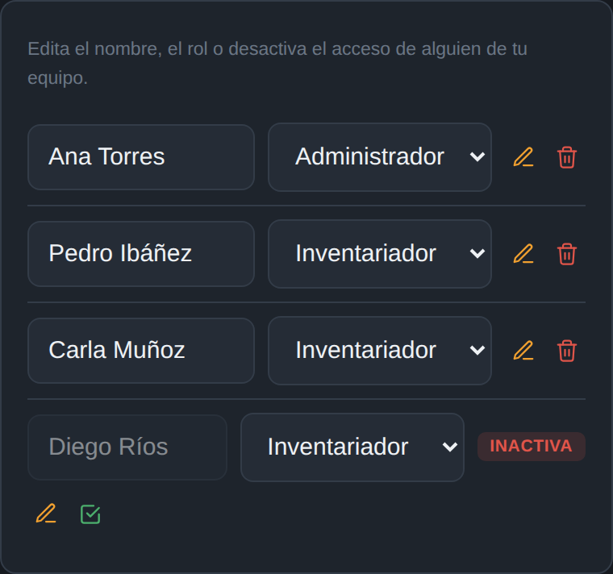
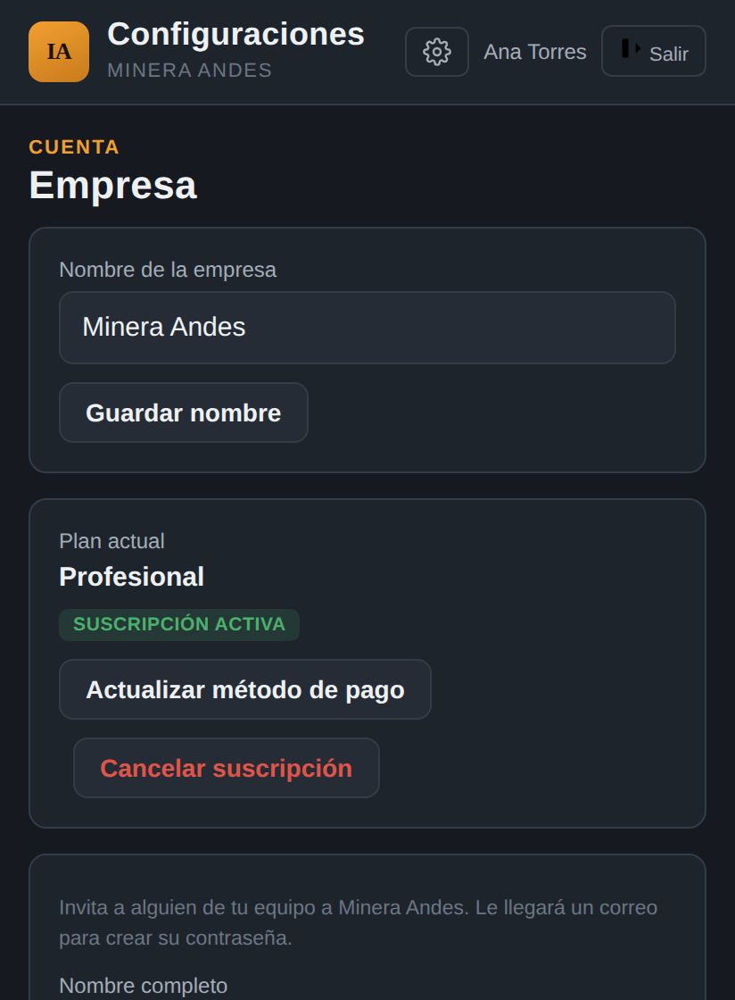
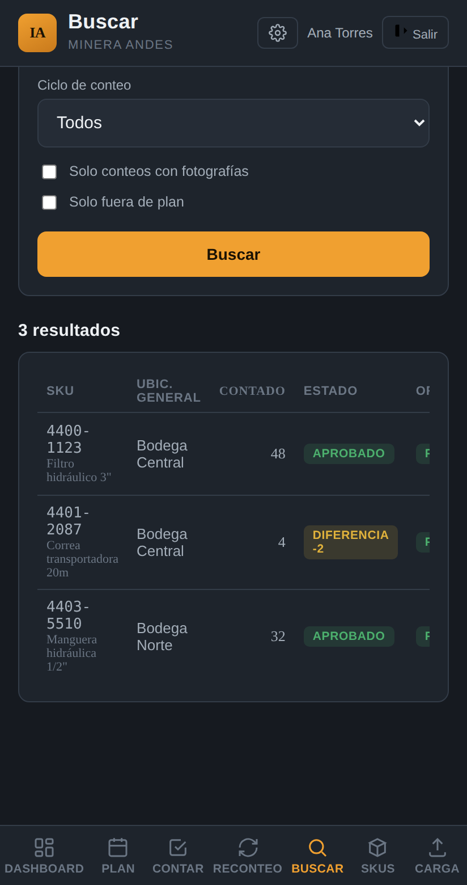

IAInventIA
Manual técnico
Qué permite y qué no InventIA, punto por punto.
Referencia funcional de la plataforma: para cada módulo, qué se puede hacer, qué reglas de negocio lo limitan y dónde está aplicado ese límite (interfaz, base de datos o ambos). Pensado para responder con precisión preguntas de un cliente técnico o de un evaluador de seguridad.
inventiapp.cl · contacto@inventiapp.cl
Contenido
01Roles y accesopág. 2
09Dashboard, períodos e informes de cierrepág. 11
02Multiempresa y aislamientopág. 3
10Buscar y Auditoríapág. 12
03Maestro de materiales (SKU)pág. 4
11Planes y límitespág. 13
04Toma de inventario (Contar)pág. 6
12Suscripción y pagos (Flow.cl)pág. 14
05Reconteo y causa probablepág. 7
13Seguridadpág. 15
06Planificación por ventanaspág. 8
14Rendimiento y capacidadpág. 16
07Grupos de conteopág. 9
15Servicios externospág. 17
08Calendariopág. 10
16Qué queda fuera por ahorapág. 18
17Módulo de bodegapág. 19
18Módulo de bodega (continuación)pág. 20
Cada afirmación de este documento corresponde a comportamiento real verificado en el código y la base de datos de producción al momento de escribirlo (reglas de negocio, políticas de seguridad a nivel de fila, triggers y funciones), no a la intención original de diseño. Las capturas de pantalla son de un ambiente de prueba con datos ficticios ("Minera Andes"). Las mediciones de rendimiento se tomaron con datos reales de un cliente, sin exponerlos. Actualizado al 10 de septiembre de 2026.
01 · Roles y acceso
Tres roles, sin más granularidad que esa
Inventariador (mostrado como "Operador") y admin son roles de empresa (columna rol en usuarios); super-admin es una marca aparte (es_super_admin) que no reemplaza el rol de empresa. Conteo ciego es un interruptor a nivel de empresa que restringe en tiempo real lo que ve un inventariador, sin cambiar su rol.
Inventariador
- Buscar y escanear SKU, registrar conteos (cantidad, ubicación, foto), con o sin conexión
- Ver su plan del día, el Calendario con solo lo suyo, Reconteo, Buscar y el Dashboard Operativo
- Ver el Dashboard Ejecutivo si el plan de su empresa lo incluye
- Cargar, editar o eliminar SKU (manual o masivo)
- Entrar a Períodos, Grupos, Plan ni Configuraciones de administración (las pestañas aparecen con candado)
- Descartar un reconteo, invitar personas, tocar la suscripción
- Ver el stock de sistema ni el stock por tipo si el admin activó Conteo ciego (bloqueado por permisos de columna, no solo en pantalla)
Admin (de su propia empresa)
- Todo lo del inventariador, más: cargar/editar SKU manual y masivo; eliminar SKU sin conteos
- Planificar por ventanas, administrar Grupos, crear períodos y ver informes de cierre
- Invitar, editar y desactivar personas de su empresa; vincular operadores a responsables del plan
- Descartar reconteos con motivo; ver Auditoría si el plan la incluye
- Activar Conteo ciego para toda su empresa; activar MFA para su propia cuenta; gestionar suscripción y pago
- Ver ni tocar SKU, conteos o personas de otra empresa (RLS a nivel de base de datos)
- Asignar como responsable a una persona de otra empresa (trigger
validar_responsable_misma_empresa en plan_semanal)
- Eliminar un SKU que ya tiene al menos un conteo
- Otorgarse un plan o suscripción activa sin pagar
Super-admin
- Activar/desactivar cualquier empresa y asignarle un plan; invitar personas a cualquier empresa
- Ver resumen agregado de negocio (empresas, personas, SKU totales) y leads del sitio
- Ver el maestro ni los conteos operativos de un cliente: las políticas de
skus y conteos no tienen excepción para super-admin, solo empresas y usuarios
- El panel de super-admin es administrativo, no operativo

Configuraciones → Mi equipo
02 · Multiempresa y aislamiento de datos
Cada empresa, su propio espacio de datos
Multitenencia real sobre una sola base de datos: cada empresa ve exactamente su información, nunca la de otra, sin importar lo que pida el cliente.
- Alta autoservicio (planes Básico/Profesional) crea la empresa, su admin y la deja en estado
pendiente_tarjeta hasta que Flow confirma la tarjeta
- Unirse a una empresa existente solo por invitación de un admin (Edge Function
invite-user)
- Cada fila de las 19 tablas de negocio se filtra por
empresa_id = empresa_actual() en 49 políticas RLS y 25 vistas con security_invoker, sin depender de que el frontend lo pida bien
empresa_actual() devuelve NULL si la empresa está inactiva, morosa o pendiente de tarjeta: la sesión sigue viva, pero no lee nada
- Cambiar de empresa sin invitación explícita de un admin
- Ver el catálogo, conteos o dashboard de otra empresa por más que se conozca su nombre o ID
- Escribir plan o suscripción desde el cliente autenticado (solo
service_role vía Edge Functions puede)
- Asignar responsables, planificar o contar a nombre de otra empresa: los listados de personas se filtran por empresa y la base rechaza el cruce
Nuevo · Verificado el 8 de septiembre
Con la base real: un usuario autenticado ve solo las filas de su empresa (66.471 SKU, 125 conteos, 434 entradas de plan, 9 usuarios, 3 empresas visibles por política de lectura). Un usuario anónimo ve 0 filas en
skus,
empresas y
planes, y no puede ejecutar ninguna función de la base.
Cómo se evalúa el contexto
Las funciones
empresa_actual(),
ciclo_actual(),
es_admin_actual(),
es_super_admin() y
debe_ocultar_stock_operador() son
STABLE SECURITY DEFINER y se invocan como
(select f()) en políticas y vistas, de modo que Postgres las evalúa una vez por consulta y no una vez por fila. Ver sección 14.

Configuraciones → Tu empresa
03 · Maestro de materiales (SKU)
Alta manual, carga masiva, y el mismo código en varios lugares
Un SKU es único por (empresa, código, bodega, batch, ubicación específica, storage bin): el mismo material puede vivir en más de un lugar dentro de la misma bodega, cada uno como su propia fila con su propio stock.
Alta manual
- Sugerencias (datalist) en batch, unidad, bodega, ubicación y storage bin, basadas en lo ya cargado; sigue aceptando un valor nuevo
- Escanear código de barras/QR para llenar el campo código; guardar sin conexión (se sincroniza solo)
- Guardar sin código de SKU (único campo obligatorio)
- Crear dos filas con el mismo código, bodega, batch, ubicación y bin: la segunda actualiza la primera, no la duplica
Carga masiva (Excel/CSV)
- Detección automática de columnas por nombre, corregible antes de confirmar
- Agregar/complementar: crea y actualiza. Reemplazar completo: además desactiva lo que no venga en el archivo (conserva su historial)
- Tras una carga complementar,
resumen_skus_no_traidos(carga_id) cuenta lo que quedó activo sin venir en el archivo y la app ofrece desactivarlo por lotes, sin tocar lo ya contado
- 4 columnas opcionales de stock por tipo (Bloqueado, tránsito 1/2, Transferencia): informativas, sumadas por código
- Huella "antes → ahora" del stock (
stock_sistema_anterior, stock_sistema_actualizado_en) cuando una carga lo cambia tras un conteo
- Actualizar sin sobrescribir: toda columna mapeada reemplaza el valor anterior, incluso a blanco
- El mismo código + bodega + batch + ubicación + bin repetido en el archivo: se queda con la última fila (el preview avisa cuántas y cuáles antes de confirmar)
Escáner
- Leer QR y códigos 1D (EAN-13/8, Code128/39/93, UPC-A/E, ITF), por código de SKU o por un código de fábrica asociado
- Si el código calza con más de una fila, preguntar cuál se cuenta mostrando bodega, ubicación y bin
- Adivinar sola cuál es cuando hay más de una coincidencia; leer sin permiso de cámara del navegador
Clasificación ABC
Vista materializada
privado.skus_valor_abc_mv refrescada por cron cada noche (07:00 UTC) y a pedido por un admin; corta en 80%/95% del valor acumulado (costo unitario × stock). Un SKU sin costo no entra. La marca Crítico es manual y alimenta el grupo automático de críticos.
03 · Maestro de materiales (continuación)
Columnas del Excel: cuáles hacen falta y para qué sirve cada una
Tomado directo de la tabla de campos que usa la detección automática de columnas al cargar un archivo.
| Columna | Obligatoria | Si falta |
|---|
| Código SKU | Sí | La fila no se guarda: es el único dato que identifica el material. |
| Stock sistema | Sí | La fila no se guarda: sin esto no hay contra qué comparar cada conteo. |
| Ubicación general (bodega) | Sí | Bloquea "Confirmar e importar" hasta mapear la columna. |
| Ubicación específica | Sí | Bloquea "Confirmar e importar". Parte de la identidad del SKU. |
| Storage bin | Sí | Bloquea "Confirmar e importar". Parte de la identidad del SKU. Recomendado siempre lleno: es la clave que usan los índices de Planificación, Calendario y Contar. |
| Costo unitario | Sí | Bloquea "Confirmar e importar". Sin costo, el material no entra a la Clase ABC ni a Valorización. |
| Descripción | No | El material solo se encuentra por código exacto, no por texto. |
| Batch | No | Solo agrupa/filtra y es parte de la identidad si se informa. |
| Unidad de medida | No | Etiqueta informativa junto a la cantidad. |
| Categoría | No | Solo filtro/etiqueta. |
| Crítico | No | El material no aparece marcado como crítico ni entra al grupo automático de críticos. Cualquier marca no vacía cuenta como "sí". |
| Bloqueado / SOH en tránsito 1 y 2 / Transferencia | No | Informativas: no se muestra el contexto de stock por tipo en Contar, Reconteo ni el maestro. |
Cómo funciona
Un SKU es único por código + bodega + batch + ubicación + bin: el mismo material repartido en varios lugares va como varias filas, cada una con su propio stock. La planilla no necesita un formato fijo: la detección de columnas es automática y deja corregir el mapeo antes de confirmar.
Ejemplos de nombres que ya reconoce
Código SKU: "Material", "SKU", "Item Code", "Part Number". Ubicación general: "Storage Location", "Plant", "Almacén". Stock sistema: "Unrestricted Stock", "Existencia", "Saldo". Bloqueado: "Blocked Stock". Tránsito: "Stock in Transit 1/2". Transferencia: "Stock in Transfer".
04 · Toma de inventario (Contar)
Plan del día, fuera de plan, y contexto de stock
La pantalla que más usa un inventariador: prioriza el plan asignado, pero nunca bloquea contar algo que no estaba planificado.
- Mostrar el plan del día del responsable vinculado a la cuenta, en cascada bodega → ubicación, juntando todas las entradas que calzan (incluidas las de bins distintos), deduplicadas por fila de SKU
- Buscar cualquier material del maestro completo para contarlo "fuera de plan"
- Guardar sin conexión: el conteo y sus fotos quedan en el dispositivo y se sincronizan solos; guardado idempotente (
idempotency_key) con reintento si la señal está lenta
- Avisar (sin bloquear) si la cantidad se ve atípica (RPC
verificar_conteo_atipico, sin revelar el stock en conteo ciego); avisar si ya fue contado en el período (veces_contado_periodo)
- Detectar materiales que una carga posterior movió de bin o ubicación desde que se planificaron (foto en
plan_semanal_skus) y mostrarlos igual, marcados
- Contar un material sin elegirlo primero de la búsqueda, el escáner o el plan
- Editar un conteo ya guardado desde esta pantalla (para eso existe Reconteo)
- Ver el stock de sistema ni el stock por tipo con Conteo ciego activo
Nuevo · Origen "Plan" también al tipear o escanear
Al elegir un SKU desde el buscador libre o el escáner, la app evalúa si está cubierto por alguna entrada del plan del día del responsable (misma regla de cobertura que el servidor: bodega, ubicación, bin, "sin ubicación", "sin bodega", exclusiones). Si lo está, el conteo se guarda con
fuera_de_plan = false. La regla es "mismo día": un SKU planificado para otra fecha sigue siendo fuera de plan.
Nuevo · Una sola llamada para el universo del día
El universo de SKU de todas las entradas activas se pide en un solo RPC (
universo_entradas_plan_contar, jsonb agrupado por entrada), y las fotos de
plan_semanal_skus en una consulta por tandas de 100 entradas. Antes era una llamada por entrada: con 29 entradas reales, de 641 ms acumulados y 29 viajes de red a 38 ms y un viaje. El mismo RPC alimenta el PDF "Mi plan del día".
05 · Reconteo y causa probable
Detecta la diferencia y sugiere por qué
Se evalúa cruzando la última cantidad contada de cada SKU (dentro del período actual, si la empresa usa períodos) contra el stock de sistema actual, no el que tenía el material el día del conteo. Si el maestro se actualizó después, la diferencia se recalcula sola y el material puede salir de la lista sin recontarlo.
- Ver la diferencia (cantidad contada − stock actual) de cada SKU pendiente, su valorización, y la huella "antes → ahora" si el stock cambió
- Causa probable automática: Ubicación distinta, Diferencia recurrente, ambas, o Sin patrón detectado
- Recontar con un toque; contexto de stock por tipo junto al stock
- Es una señal basada en reglas simples, no una certeza ni un modelo de IA
- No usa "movimiento reciente" de bodega: la app no registra entradas/salidas de stock, solo conteos
- No arrastra diferencias de un período anterior ya cerrado
Nuevo · Pendientes por semana
RPC
reconteo_pendiente_por_semana(p_tz) agrupa los pendientes por semana ISO de la fecha del último conteo, en la zona horaria del dispositivo. La app muestra un gráfico de barras ("36S") y al tocar una barra filtra la lista con
ultimo_conteo_fecha entre el lunes y el domingo de esa semana. Al descartar el último pendiente de una semana, la vista se queda en esa semana con un aviso, no salta sola.
Nuevo · Descartar reconteo (solo admin)
RPC
descartar_reconteo(p_conteo_id, p_motivo),
SECURITY DEFINER con verificación de rol admin de la misma empresa: marca
reconteo_descartado_en y
reconteo_descartado_por en el conteo y deja el motivo en Auditoría. El material sale de pendientes sin nuevo conteo. Uso previsto: errores del dato maestro, no diferencias físicas.

Reconteo → pendientes, con huella de SOH anterior/nuevo
06 · Planificación
Plan por ventanas: día, semana, mes, año y período
Una entrada del plan es una fila de plan_semanal: fecha, bodega, ubicación, un storage bin (una fila por bin), responsable, nota, período y banderas para "SKU sin ubicación" y "sin ubicación específica". Su universo de SKU se resuelve siempre en el servidor.
- Cinco ventanas: Día, Semana, Mes, Año y Período (selector). Día y Semana traen el detalle de SKU por entrada; Mes, Año y Período son vistas resumidas
- Un mismo SKU cubierto por dos entradas se cuenta una sola vez en los totales de la ventana (regla "gana la entrada más temprana por fecha y creación", igual en cliente y servidor)
- Aviso de solapamiento antes de agregar: cuántos SKU de la entrada nueva ya están planificados en el período (
skus_planificables vs skus_disponibles_planificar)
- Exclusiones puntuales por entrada (
plan_semanal_exclusiones) resueltas en el servidor: nunca viajan por la URL
- Entradas por código de SKU (
por_sku + lista exacta en plan_semanal_incluidos), agrupadas por bodega y ubicación; las resuelven las mismas funciones que el resto (universo, calendario, disponibles)
- Exportar PDF con el listado completo de la ventana en una sola llamada (
universo_entradas_plan_hoja)
- Dos períodos "actuales" a la vez (marcar uno nuevo desmarca el anterior)
- Bloquear a alguien de contar algo que no le fue asignado: es una guía, no un candado
- Asignar como responsable a alguien de otra empresa (trigger)
- Ver o quitar SKU puntuales desde Mes, Año o Período: hay que bajar a Día o Semana
| Ventana | Qué pide al servidor | RPC |
|---|
| Día / Semana | Entradas de la ventana + universo agrupado por entrada (id, código, descripción) | universo_entradas_plan_resumen |
| Mes / Año / Período | Entradas (paginadas de a 1.000) + solo totales por entrada: total y propios | resumen_entradas_plan |
| PDF | Listado completo con bin, unidad, clase ABC y crítico | universo_entradas_plan_hoja |
| Contar | Universo completo de las entradas activas del día | universo_entradas_plan_contar |
Por qué un solo RPC en jsonb
PostgREST vuelve a ejecutar una función de tabla por cada página de Range. Con el período completo real (3.062 filas) eran 4 ejecuciones de 6 a 19 s que dejaban sin CPU al resto de la app. Todas las funciones de universo devuelven un solo
jsonb sin paginar: una ejecución, 1,6 s para el período completo y menos de 0,1 s para un mes.
07 · Planificación
Grupos de conteo
Un grupo (grupos_conteo) es una lista de materiales con frecuencia propia (frecuencia_dias) y fecha de inicio de ciclo. Sus miembros viven en skus_grupos_conteo por código y bodega, o se derivan de la marca Crítico si el grupo es automático.
- Crear grupos manuales o el automático de críticos (
automatico_critico): incluye siempre todos los SKU activos marcados como Crítico
- Contar posiciones reales: "N materiales · M posiciones" (RPC
posiciones_por_grupo): un código puede estar en varias bodegas o bins
- Vista previa por capacidad: personas × horas × materiales por hora = cupo semanal; reparte los pendientes en semanas y zonas, sin crear nada hasta confirmar
- Generar el plan: una entrada por storage bin, con exclusiones para los materiales de la zona que no son del grupo, sin responsable (se reparte en Plan). Generar de nuevo reemplaza las entradas anteriores del grupo
- Resumen del plan generado por grupo en una llamada (RPC
resumen_plan_grupos): entradas, SKU por contar, rango de fechas y entradas por venir
- Cierre automático de ciclo: cron diario
cerrar_ciclos_grupo_vencidos (05:00 UTC). Cuando fecha_inicio + frecuencia ya pasó, guarda en historial_ciclos_grupo quién quedó contado y quién no entre la fecha de inicio y el día anterior al cierre; el ciclo nuevo parte el día del cierre con todo pendiente. Un re-cierre de la misma fecha de inicio reemplaza la foto anterior
- PDF de cada ciclo cerrado desde el historial (detalle por material con descripción, estado y fecha de conteo)
- Pausar (
activo = false) y reactivar con fecha de inicio hoy; al pausar, la app ofrece borrar solo las entradas futuras generadas por ese grupo, nunca las pasadas ni las contadas
- Cerrar el período de conteo de la empresa ni aparecer en Buscar: el ciclo de un grupo es independiente
- Eliminar un grupo con historial: se pausa. Los materiales, el historial y las entradas ya contadas se conservan
- Asignar responsables desde el grupo: eso se hace en Plan, entrada por entrada
Cómo se ve en Planificación
Las entradas generadas llevan una nota que identifica al grupo y se ven como cualquier otra; el aviso de solapamiento también aplica si después agregas a mano una zona que el grupo ya cubre. Sin captura: la etapa 05 del Manual de usuario describe la pantalla.
08 · Planificación
Calendario
Vista mensual con cuatro cifras por día: planificado, contado, recontado y pendiente. Un solo RPC por mes, resumen_calendario_mes(p_mes), que respeta el rol: un admin ve toda la empresa, un operador solo sus entradas y sus conteos.
- Planificado: SKU distintos cubiertos por las entradas del día, con la misma regla de cobertura y exclusiones que Plan y Contar
- Pendiente: planificado sin ningún conteo en el período actual (una sola lista de SKU contados por consulta, no una subconsulta por SKU)
- Contado y Recontado: conteos del día en hora de Chile, distinguiendo el primer conteo de un SKU en el período de los siguientes
- Detalle del día con atajos a Contar (esa fecha), Plan (vista Día) y Buscar (filtrado por fecha)
- Se invalida solo tras cualquier cambio en el plan; se vuelve a pedir al entrar
- Mostrar SKU individuales: para eso están Plan y Buscar
- Ver los conteos de otras personas siendo operador
Actualizado · Rendimiento
La versión anterior escribía el filtro de storage bin como un OR que el índice no podía usar: cada entrada con bin recorría su ubicación completa. Con 158 entradas en un mes (153 con bin, en 7 ubicaciones) eran 2,6 millones de lecturas y 3,4 s. Ahora cada caso se parte en "con bin" (entra al índice
empresa, bodega, ubicación, bin) y "sin bin": 60 ms para el mismo mes, mismos resultados.
09 · Seguimiento
Dashboard, períodos e informes de cierre
Todas las métricas se calculan sobre el período marcado como actual (ciclo_actual()); si la empresa no usa períodos, sobre todo el historial.
- Operativo (todos los planes): avance por bodega, Estado general de SKU por estado y clase ABC con filtro de criticidad, y tablas diaria, semanal y mensual con reconteos distinguidos
- Ejecutivo (según plan): avance global, proyección de término al ritmo de 14 días, adherencia al plan, exactitud (sin diferencia, ubicación correcta, ranking por bodega, tendencia mensual), valorización, Top 10 de pérdidas y excedentes, ABC, ranking por responsable, pendientes por bodega; exportable a PDF
- Períodos con fecha de inicio:
marcar_ciclo_actual cierra el anterior y guarda su informe en informes_ciclo (avance, exactitud, diferencias, ranking, valorización y reconteos sin resolver, como jsonb)
- Períodos programados: cron diario
activar_periodos_programados (06:00 UTC) activa el período cuya fecha de inicio ya llegó, cerrando el anterior y generando su informe
- Comparar dos períodos en una misma vista: la tendencia de exactitud compara por mes calendario
- Enviar el informe de cierre por correo: se genera y guarda solo, pero el envío sigue siendo manual
- Configurar la frecuencia de conteo por SKU según su Clase ABC (la frecuencia existe por grupo, no por clase)
Actualizado · Dashboard más liviano
Se eliminaron "Conteos recientes" y "Materiales contados" del Operativo y el rango de fechas del Estado general de SKU: duplicaban Buscar y el Calendario y cargaban listas paginadas en cada visita.
resumen_general_skus responde hoy en 50 ms con el maestro real.
Informe de cierre: foto, no consulta
Un informe guardado se renderiza desde el jsonb almacenado (
renderCuerpoInformeGuardado), por eso no cambia aunque después se carguen Excel nuevos o se recuente. Se puede abrir y exportar a PDF desde Períodos → Informes de cierre.
10 · Buscar y Auditoría
Historial de conteos y trazabilidad de cambios
- Buscar por código, descripción, batch o storage bin; filtrar por bodega, estado, período, crítico, Clase ABC, "solo con fotos" y "solo fuera de plan"; ordenar por cualquier columna
- El título y los gráficos muestran el total real que cumple los filtros (RPC
contar_busqueda_skus), no solo las filas traídas al navegador
- Columna Origen: "Plan" o "Fuera de plan", coherente con la regla del mismo día de Contar
- Exportar a Excel los resultados filtrados, o un rango de fechas completo (un renglón por conteo) para un ERP; exportar seleccionados a PDF con foto, observación y detalle
- Gráfico interactivo "Quién contó" y resumen por estado, reactivos a los filtros
- Conteos capturados sin señal muestran la hora real de captura (
capturado_en) además de la de sincronización
- Auditoría (admin/super-admin, según plan): quién cambió qué en usuarios, empresas, conteos, maestro de SKU y descartes de reconteo, con valor antes/después
- Editar un conteo desde Buscar, solo verlo
- Conservar la auditoría más de 14 días: cron diario
purgar_auditoria_antigua. Ampliable por configuración si un cliente lo exige

Buscar → resultados
11 · Planes y límites
Aplicado en la base de datos, no solo en la pantalla
Los límites de bodegas y usuarios están en triggers de Postgres (trg_limite_bodegas, trg_limite_usuarios): no se pueden sortear llamando a la API directamente. Las funciones por plan se leen de la tabla planes y la app falla "abierta" solo en la interfaz; el límite real está en la base.
| Básico | Profesional | Empresa |
|---|
| Precio neto | USD 160/mes | USD 300/mes | A medida |
| Cobro en tarjeta (Flow) | $187.000 CLP/mes, IVA incluido | $350.000 CLP/mes, IVA incluido | Según contrato |
| Bodegas | Máximo 1 | Máximo 2 | Ilimitadas |
| Usuarios | 1 operador (+ admin) | 2 operadores (+ admin) | Ilimitados |
| Dashboard Ejecutivo + Exactitud | No incluido | Incluido | Incluido |
| Auditoría | No incluida | Incluida | Incluida |
| Modo offline y escáner | No incluido | Incluido | Incluido |
| Grupos, Calendario, Períodos, Reconteo | Incluidos | Incluidos | Incluidos |
Actualizado · Precios y tipo de cambio
Los precios en pesos se calculan con un dólar de referencia de $980 (observado del Banco Central el 8 de septiembre: $933,68) más 19% de IVA, redondeados. El monto que cobra Flow es el total con IVA; InventIA emite el documento tributario por ese monto. Si el dólar se mueve, se ajusta el monto del plan en Flow y el landing, sin tocar la app.
Cómo se ve el bloqueo
El botón "Ejecutivo 🔒" queda deshabilitado en cuanto
dashboard_ejecutivo_habilitado es falso para el plan de la empresa; las pestañas de administración muestran candado para un operador. No es solo un límite documentado: es lo que renderiza la app.

Configuraciones → Plan y facturación
12 · Suscripción y pagos (Flow.cl)
Alta autoservicio y cobro automático, sin depender del webhook
Flow registra la tarjeta (OneClick) y cobra la suscripción mensual. InventIA guarda en empresas el cliente, la suscripción y su estado: pendiente_tarjeta, activa, morosa, cancelada o vencida. Solo morosa y pendiente_tarjeta bloquean el acceso; vencida también, tras 31 días de una cancelación.
- Alta autoservicio para Básico/Profesional desde el sitio: el botón Suscribirme está activo y lleva a "Crea tu cuenta"; tras registrar la tarjeta, el primer cobro se hace de inmediato y la empresa queda activa
- Cobro recurrente mensual; cambiar entre Básico y Profesional sin re-registrar tarjeta; actualizar método de pago; cancelar con acceso hasta fin del período pagado
- Sincronización del estado con Flow al iniciar sesión (Edge Function
flow-sincronizar-suscripcion): consulta /subscription/get, como mucho cada 6 h por empresa desde la app y cada 10 min en el servidor, y registra en flow_eventos solo cuando el estado cambia
- Pantalla de cuenta bloqueada por mora con botón "Ya regularicé el pago, verificar" que consulta a Flow y deja entrar si ya está al día
- Usar la app con la tarjeta pendiente de registro o con un cobro fallido sin regularizar
- Cambiar al plan Empresa de forma autoservicio: se coordina a medida
- Depender del webhook de cobro para saber si una empresa pagó (ver abajo)
Hallazgo verificado · El webhook de Flow no se invocó
Con una suscripción real de prueba (plan de $500, 3 de septiembre de 2026): Flow cobró y pagó la primera factura al registrar la tarjeta, la suscripción quedó activa y sin mora, y el
urlCallback del plan apunta correctamente a
flow-webhook-cobro. Sin embargo, esa función no recibió ninguna llamada entre el 3 y el 8 de septiembre. Por eso el estado ya no depende del webhook: la sincronización al iniciar sesión es la fuente de verdad, y el webhook queda como respaldo que guarda el payload crudo si algún día llega. La renovación del 3 de octubre está agendada para revisión.
Edge Functions de Flow
flow-iniciar-suscripcion (crea cliente y abre el registro de tarjeta),
flow-registro-callback (retorno de Flow: crea la suscripción y activa la empresa),
flow-cambiar-plan,
flow-cancelar-suscripcion,
flow-sincronizar-suscripcion y
flow-webhook-cobro. Todas usan
service_role para escribir; las que llama la app exigen sesión válida y rol admin donde corresponde.
13 · Seguridad
Lo que protege cada capa
- RLS activo en las 27 tablas del esquema, 71 políticas, todas por
empresa_id o rol; las 29 vistas con security_invoker = true
- Ninguna de las 68 funciones es ejecutable por
anon ni por PUBLIC: EXECUTE revocado también en los privilegios por defecto. Con sesión se ejecutan 45; las 23 restantes (triggers, cron, mantenimiento, reset de la demo) solo service_role
- Funciones
SECURITY DEFINER expuestas a usuarios con sesión: 13, todas con verificación interna de empresa y rol (ej. descartar_reconteo, renombrar_ubicacion_general)
- Trigger
validar_responsable_misma_empresa: rechaza un responsable de otra empresa en plan_semanal
- Fotos en bucket privado con enlaces firmados y temporales; hasta 20 MB, solo imágenes, rutas por empresa. Cada foto se comprime en el dispositivo antes de subirse (máximo 1600 px, JPEG 0,82)
- Contraseñas verificadas contra bases filtradas; límite de intentos de inicio de sesión; código de acceso de 6 dígitos como alternativa al link; MFA TOTP opcional (aal2); una sola sesión activa por usuario
- Conteo ciego endurecido en la base (permisos por columna): ni por la API directa se obtiene el stock
- Historial de ubicaciones con política de SELECT solamente: se lee desde la app, no se edita desde ella
- Errores capturados por Sentry; respaldos diarios verificados con una restauración real. Postgres 17.6 en canal General Availability, región São Paulo
- Acceder a una foto sin sesión autenticada de esa empresa
- Registrar una contraseña que aparezca en una base de contraseñas filtradas conocida
- Subir un archivo que no sea imagen, o mayor a 20 MB, al bucket de fotos
- Ejecutar por API una función de mantenimiento o de trigger, aunque se tenga sesión
- CAPTCHA en el login: pendiente (el rate limit ya frena fuerza bruta)
Estado del advisor de seguridad de Supabase
Al 10 de septiembre reporta solo dos tipos de aviso, ambos conocidos e intencionales: la extensión
pg_net en el esquema
public, y las 13 funciones
SECURITY DEFINER que los usuarios con sesión necesitan invocar. Ningún aviso de RLS ausente ni de vistas expuestas.
14 · Rendimiento y capacidad
Medido con datos reales, no estimado
Cifras tomadas en producción con el maestro real de un cliente (66.000 SKU activos, 434 entradas de plan, 12.000 exclusiones), simulando la sesión del usuario con RLS activa. Compute Small (2 GB, 2 núcleos, 90 conexiones).
| Consulta | Antes | Ahora | Qué cambió |
|---|
| Calendario, mes con 158 entradas | 3.449 ms | 60 ms | Filtro de bin sargable; lista única de SKU contados |
| Universo del plan, mes completo (Planificación) | 2.474 ms | 98 ms | Funciones de contexto evaluadas una vez por consulta |
| Plan del día en Contar, 29 entradas | 641 ms + 29 viajes | 38 ms, 1 viaje | RPC único en jsonb |
| Período completo, 376 entradas (resumida) | 4 corridas de 6 a 19 s | 118 ms | Sin paginación por Range; solo totales |
| Adherencia al plan (Dashboard) | 549 ms | 61 ms | Ramas con/sin bin sargables; contempla entradas por código |
| Arranque de la app al iniciar sesión | ~25 en paralelo | 3 + las de la vista | Cada pestaña pide lo suyo al mostrarse |
| Generar plan de un grupo, 322 entradas | 957 consultas | 1 por zona (5 ms) | Bins en una consulta in.(...); universo reutilizado |
| Agregar entrada con N bins marcados a mano | 2 × N conteos | 2 conteos | Aviso de solape cuenta todos los bins juntos |
| Ubicación sin bins, 32.000 SKU (selector) | 66 páginas | 1 página de 301 filas | Tope de filas y columnas mínimas |
Regla aplicada en toda la base
empresa_actual(),
ciclo_actual() y las demás funciones de contexto se escriben como
(select f()) en las políticas RLS y en las vistas que las usan: Postgres las evalúa una vez por consulta (InitPlan) y no una vez por fila. Medido, contar 125 conteos pasó de 40 ms a 4,7 ms.
Índices
Compuestos por empresa en
skus (bodega, ubicación, bin; último conteo; ABC; crítico),
conteos (empresa + período, SKU, usuario, fecha) y
plan_semanal. Todas las llaves foráneas de plan y conteos están cubiertas.
Nuevo · Versión nueva y caché local
La app compara el ETag de su propio HTML al volver a primer plano y cada 15 minutos; si cambió, ofrece recargar (una pestaña con código antiguo llegó a hacer 4.000 llamadas a una función retirada). Los agregados de SKU viven 10 minutos en el navegador y se invalidan con cargas, conteos y cambios del plan.
Capacidad
Con Small, el cliente de referencia usa cerca del 15% de las conexiones y menos del 20% de CPU en conteo. Subir a Medium (4 GB) es un cambio de configuración sin tocar la app.
15 · Aplicaciones y servicios externos
De qué depende InventIA para funcionar
InventIA no tiene servidor propio: es un archivo HTML estático más un puñado de servicios de terceros. Esta es la lista completa, con para qué se usa cada uno.
| Servicio | | Para qué se usa |
|---|
| Supabase | Producción | Backend completo: Postgres 17.6 (canal GA, compute Small, São Paulo), autenticación, almacenamiento de fotos, cron (pg_cron) y 8 Edge Functions: invite-user, crear-empresa-autoservicio, las 6 de Flow. Única pieza de infraestructura propia. |
| Flow.cl | Producción | Pasarela de pago (Chile): registra la tarjeta y cobra la suscripción mensual. El estado se sincroniza consultando su API; el webhook queda como respaldo. |
| Brevo | Producción | SMTP que envía los correos de acceso (crear contraseña, restablecerla, código de 6 dígitos) a nombre de "InventIA". |
| Sentry | Producción | Monitoreo de errores: captura sola los errores de JavaScript del navegador, con stack trace, empresa y usuario afectado. |
| GitHub | Producción | Control de versiones, integración continua (1.630 asserts unitarios y tests end-to-end con navegador real en cada cambio) y hosting del sitio bajo inventiapp.cl. |
| Google Fonts | Producción | Sirve las tipografías de la interfaz (Barlow Condensed, Inter, IBM Plex Mono). |
| jsDelivr (CDN) | Producción | Sirve SheetJS/xlsx (lee Excel/CSV) y html5-qrcode (cámara para el escáner). |
| Google Analytics | Producción | Visitas y eventos del sitio (clics en demo, contacto y Suscribirme). No se usa dentro de la app. |
| Playwright | Desarrollo | No corre en producción: tests automatizados con navegador real antes de publicar cada cambio. |
Tareas programadas (pg_cron, UTC)
05:00 cierre de ciclos de grupo vencidos · 06:00 activación de períodos programados y purga de auditoría · 07:00 refresco de clasificación ABC y vencimiento de suscripciones canceladas · 08:00 reset de la cuenta demo. Todas son funciones que solo
service_role puede ejecutar.
16 · Qué queda fuera por ahora
Explícitamente, no por olvido
Cada punto de esta lista requiere un dato que hoy el cliente no mantiene, un paso manual de configuración, o no tiene todavía una demanda real detrás. Mejor no prometerlo hasta que corresponda.
No incluido hoy
- "Movimiento reciente" de bodega como señal de causa probable: requiere registrar entradas/salidas de stock, no solo conteos (empujaría hacia un WMS)
- Frecuencia de conteo por SKU según su Clase ABC: la clasificación y el % de avance por clase existen, y la frecuencia existe por grupo; la asignación automática por clase, no
- Integración directa con SAP (API): proyecto en sí mismo, se evalúa ante un trato real que lo exija
- Envío automático del informe de cierre por correo: el informe se genera y guarda solo; el envío es manual
- Aviso por correo a InventIA cuando una empresa se suscribe, cancela o cae en mora: diseñado, pendiente de una clave de API de Brevo
- CAPTCHA en el login y guía de activación rediseñada para empresas nuevas
- Zona horaria, idioma y moneda por empresa: hoy fijos en Chile (hora de Santiago, español, pesos)
- Logo de empresa en la app y los PDF; compresión de fotos en el celular antes de subir
- Carga masiva de "respaldo" (segundo corte de stock): existió, se sacó por falta de uso, queda en el backlog
Sobre este documento
Es una fotografía del comportamiento real de la plataforma al momento de escribirse, tomada directamente del código, las políticas y funciones de la base de datos, mediciones en producción y capturas de la interfaz, no de la intención original de diseño. Si una regla o pantalla cambia, este documento debe actualizarse junto con el cambio.
Preguntas técnicas puntuales (esquema de datos, políticas de seguridad exactas, límites de una integración) se responden mejor por escrito: contacto@inventiapp.cl.
17 · Módulo de bodega
Stock en mano mantenido por la base, no por la pantalla
Módulo opcional (empresas.modulo_bodega_habilitado, lo activa el súper admin por empresa). Ingresos, salidas, ajustes y apertura viven en movimientos_bodega; el stock en mano es skus.stock_sistema, que solo cambia por trigger al aprobar o anular un movimiento.
Tablas y vistas
proveedores,
personas_retiro,
documentos_bodega (cabecera con número único por empresa y clave de idempotencia),
movimientos_bodega (una fila por SKU; estado aprobado, pendiente_aprobacion, pendiente_revision o anulado) y
movimiento_fotos. Vistas con
security_invoker:
movimientos_bodega_detalle,
movimientos_bodega_pendientes,
stock_actual y
kardex_bodega (saldo corrido por SKU en el orden en que cada movimiento afectó el stock). Todas las tablas nuevas entran en la auditoría.
Reglas en triggers y RPC
Un trigger BEFORE INSERT valida empresa, módulo y saldo: una salida sin stock se rechaza, salvo que venga de la cola sin conexión con el saldo que vio el celular (
saldo_local), y ahí queda pendiente de revisión. Un ajuste (
registrar_ajuste_bodega) guarda el delta y el saldo del momento; si se aprueba más tarde,
resolver_movimiento_bodega recalcula el delta contra el stock actual para llegar a la cantidad propuesta. Un trigger AFTER aplica el efecto al stock solo en las transiciones desde o hacia aprobado y bloquea editar cantidades de un movimiento aprobado: se anula y se registra otro. Anular un ingreso cuyo material ya salió se rechaza con mensaje claro, porque el stock no puede quedar negativo.
Idempotencia y sin conexión
registrar_documento_bodega recibe una clave de idempotencia generada en el celular: si la cola reintenta, devuelve el documento ya creado en vez de duplicarlo. Las fotos se suben a la carpeta de la empresa en el bucket privado y se asocian al documento.
Apertura y demo
La apertura (
registrar_apertura_bodega(p_limite)) deja como primer movimiento el saldo que ya estaba en
stock_sistema, sin cambiarlo: inserta el lote y en una segunda sentencia devuelve el stock al valor de la apertura, porque el trigger AFTER de la primera lo había vuelto a sumar. Va por lotes y devuelve
{registrados, restantes}: con un catálogo real (más de 60.000 materiales con stock) una sola llamada supera el límite de 8 s del rol
authenticated; medido, 2.000 filas toman unos 3 s. La dispara la primera carga masiva tras activar el módulo, o el botón "Registrar apertura de stock" que aparece en Movimientos cuando
resumen_valorizacion_bodega informa materiales con stock y sin movimientos. Las cargas siguientes ya no tocan
stock_sistema. En la empresa demo el reset nocturno siembra apertura, un ingreso y una salida; como corre sin sesión de usuario, el trigger deja pasar solo las filas marcadas por la propia función de reset.
18 · Módulo de bodega (continuación)
Costo, ubicaciones y reportes
Monto del ingreso y tipo de material
Cada línea del ingreso puede traer
costo_unitario, que se guarda en el propio movimiento: el informe de ingresos por proveedor refleja lo pagado en esa compra aunque el costo del maestro cambie después. La vista expone
costo_aplicado (el del movimiento y si no, el del maestro), que es lo que valorizan los reportes. Un ingreso con costo escribe
skus.costo_unitario: manda la última compra. Para valorizar con otro precio se corrige a mano en Stock, que es lo que la vista usa cuando el movimiento no trae costo propio.
skus.tipo_material es texto libre con índice por empresa (EPP, repuesto, sustancia peligrosa, componente, otros): se fija al crear el material desde el ingreso, se edita en Stock o llega por Excel, y agrupa consumo e ingresos.
Nuevo · Devoluciones a bodega
Una devolución (
tipo = devolucion, prefijo DEV) va siempre contra la salida que entregó el material (
documento_origen_id).
lineas_por_devolver calcula lo que salió menos lo ya devuelto y
registrar_devolucion_bodega rechaza lo que exceda ese tope. No requiere aprobación: el material ya está en bodega. Copia
retirado_por y
destino, y el reporte de consumo las resta del mismo grupo.
Nuevo · Traslados entre bodegas
Un traslado (
tipo = transferencia, prefijo TRA) genera dos movimientos por línea:
transferencia_salida sobre la ficha de origen y
transferencia_entrada sobre la de destino.
registrar_transferencia_bodega crea la ficha del destino con stock 0 si no existe (heredando descripción, categoría, unidad, batch, costo, tipo y criticidad), reactiva una desactivada y rechaza un destino igual al origen.
efecto_movimiento_bodega devuelve negativo para la salida, así el kardex y el trigger de stock funcionan sin casos especiales. No requiere aprobación y los reportes de consumo lo excluyen: el material no se consumió, cambió de sitio.
Reportes, valorización y mínimos
Tres funciones agregan en el servidor, sin
SECURITY DEFINER: corren con los permisos de quien llama.
reporte_consumo_bodega(desde, hasta, agrupar) suma salidas menos devoluciones por persona, área, destino o material;
reporte_ingresos_bodega hace lo mismo con los ingresos;
resumen_valorizacion_bodega() devuelve el valor del stock, cuántos materiales quedan fuera por no tener costo y cuántos están bajo su mínimo.
skus.stock_minimo (null = sin mínimo) se edita en Stock o llega por Excel;
stock_actual expone
bajo_minimo y
falta_para_minimo, así el filtro de reposición se resuelve en el servidor.
18 · Módulo de bodega (continuación)
Ubicaciones, historial y permisos
Catálogo de ubicaciones
ubicaciones guarda los sitios de cada empresa con índice único por empresa + sitio y marca
activo: una bodega desactivada deja de ofrecerse sin borrar nada. Como la identidad del material incluye el sitio, cambiarlo es un UPDATE de la misma fila: conserva conteos, kardex y stock. Renombrar una bodega toca seis tablas;
renombrar_ubicacion_general va por lotes de 2.000 (medido sobre 60.164 materiales) y aborta si el destino dejaría dos materiales en el mismo sitio.
Nuevo · Historial de ubicaciones
ubicaciones_historial registra sitio anterior, sitio nuevo, quién y cuándo. Lo escribe un trigger a nivel de SENTENCIA sobre
skus con transition tables: registra el cambio venga de la ventana de mover, de un renombrado por lotes o de una carga masiva. La auditoría general no alcanzaba — guarda el antes y el después solo hasta 50 filas por sentencia. RLS con política de SELECT solamente: se lee desde la app, no se corrige desde ella. Costo medido: el lote de 2.000 del renombrado pasó de 453 ms a 578-635 ms, y mover un material suelto toma 7,15 ms.
Nuevo · Órdenes de compra
La OC la emite la propia app (
ordenes_compra +
ordenes_compra_lineas, prefijo OC con numeración propia porque no genera movimientos hasta que llega el material). En la tabla solo viven tres estados —borrador, enviada y anulada—;
recibida y
recibida en parte los deriva la vista
ordenes_compra_lista de lo efectivamente recibido, así no hay dos fuentes de verdad que puedan discrepar. La recepción es un ingreso normal con
documentos_bodega.orden_compra_id;
lineas_por_recibir devuelve el pendiente por línea con el precio acordado. Un material entra una sola vez por orden (índice único): con dos líneas del mismo código no habría cómo repartir lo recibido. Recibir de más se permite y queda visible como
exceso: bloquearlo llevaría a no registrar material que físicamente ya está. Emitir y modificar exige administrador, comprobado en la función además de la RLS —un UPDATE que la RLS filtra no falla, simplemente no afecta filas, y la función habría devuelto la orden sin cambios como si hubiera funcionado.
18 · Módulo de bodega (continuación)
Reservas e interruptores por función
Nuevo · Reservas de material
Reservar aparta
cantidad, no unidades marcadas, así que una reserva no le pone dueño a ninguna unidad y no bloquea ninguna salida: bloquear llevaría a que el material saliera físicamente sin registrarse.
reservas +
reservas_lineas (prefijo RES); la salida que entrega apunta a ella con
documentos_bodega.reserva_id. Guardadas viven solo
activa y
cancelada; entregada, descubierta y vencida las deriva
reservas_lista.
reservado_por_sku suma lo pendiente de las reservas vivas y
stock_actual gana
reservado y
disponible (medido: 1,2 ms para 300 filas sobre las 63.500 de Escondida). El
faltante es del material, no de la reserva: si lo comprometido supera el stock, alguien se queda sin material y la app ofrece cubrirlo emitiendo una OC con esas cantidades. Editar una reserva con entregas se rechaza; cancelar es del administrador o de quien la pidió.
Nuevo · Interruptores por función
empresas.bodega_funciones (jsonb) prende y apaga órdenes de compra, reservas, devoluciones y traslados por empresa desde súper admin. Sin llave = activa, para que nadie pierda algo que ya usaba.
funcion_bodega_activa(texto) entra en la RLS de las órdenes de compra y de las reservas, y
exigir_funcion_bodega en las funciones de devolución y traslado. Un jsonb en vez de una columna por función: agregar la siguiente no obliga a migrar la tabla otra vez.
Nuevo · Logo de la empresa
empresas.logo guarda el logo como
data URI, no como archivo en el bucket. El motivo es la impresión: el comprobante y la orden de compra se arman en la misma pestaña y se mandan a imprimir de inmediato, así que una URL firmada agrega una ida al servidor que puede vencer justo ahí. Como data URI el logo viaja con el perfil y siempre está. La app lo re-encoda a PNG (conserva la transparencia) probando 320, 240 y 180 px hasta que entre en el tope de 200.000 caracteres del check; uno simple ronda los 5 KB. La insignia de la barra mantiene el alto y crece a lo ancho hasta 112 px según la proporción del logo: la mayoría de los logos de empresa son wordmarks horizontales, y encerrado en el cuadrado de 34x34 uno de 5:1 quedaba en una franja de 5 px, ilegible. Aparece en la insignia de la barra y en el encabezado de los ocho documentos imprimibles; sin logo, el HTML queda idéntico al de antes.
Nuevo · Columnas de negocio protegidas
Hallazgo del camino: la política de UPDATE de
empresas dejaba que el administrador de una empresa cambiara
cualquier columna de su propia fila, incluidos
plan_id,
modulo_bodega_habilitado y el estado de la suscripción. Ya era así antes del logo; como ahora los admin escriben en esa tabla desde la app, se cerró con un trigger BEFORE UPDATE: solo súper admin toca lo que es del negocio. El service role (Edge Functions de Flow, reset de la demo) pasa porque llega sin
auth.uid().
Permisos
Todo bajo RLS por empresa. Operadores registran ingresos, salidas, devoluciones y traslados, reservan material y proponen ajustes; solo el administrador aprueba, anula y mantiene las listas.